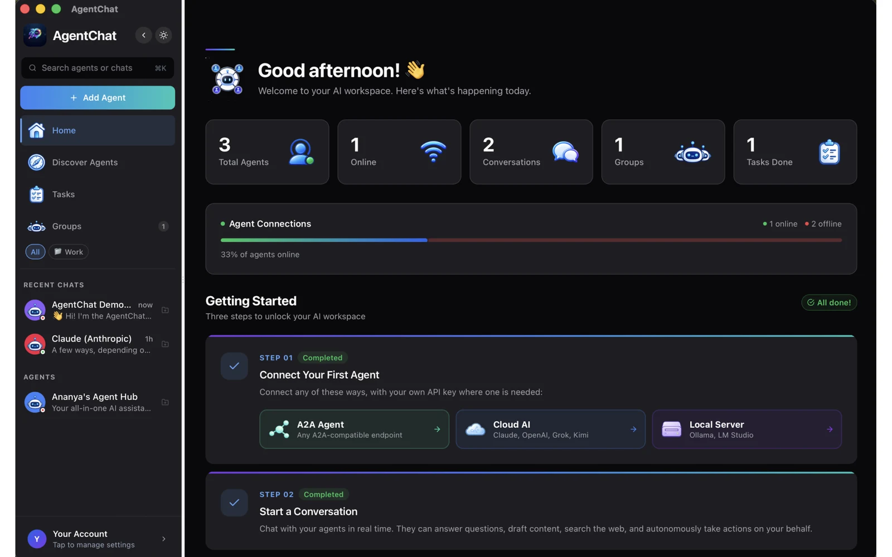
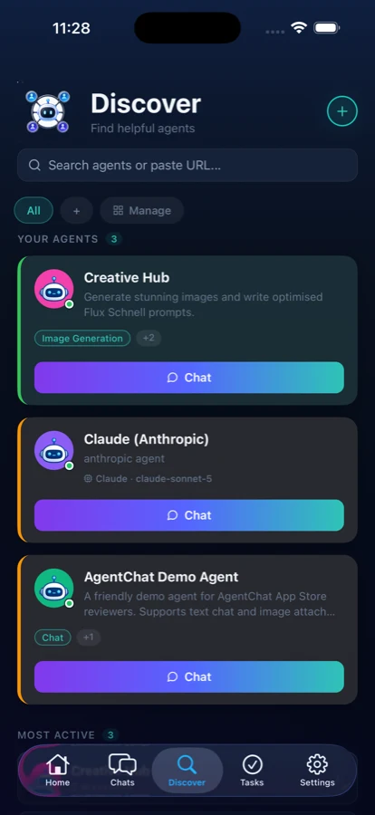

Bring your cloud AI.
Use Claude, OpenAI, Grok, Kimi, or DeepSeek with your own API key. Choose your provider and pay them directly.
Supported cloud APIsOne app for your cloud models, local LLMs, and AI agents.
Hosted anywhere. AgentChat Hub collects no data.
Free app. Your connections. Provider API charges may apply.

Open by design
Keep the models you like. Connect the agents you need. Bring them together in a workspace that belongs to you.
Use Claude, OpenAI, Grok, Kimi, or DeepSeek with your own API key. Choose your provider and pay them directly.
Supported cloud APIsConnect to Ollama or LM Studio on your computer or a reachable server. Choose the model you run.
Local & self-hosted modelsBuilt by you, your team, or someone across the world. Add a compatible A2A agent by its URL and start a conversation.
Compatible A2A endpointsPrivacy is the starting point
AgentChat Hub collects no data.
No conversation collection. No usage analytics. No account to create. Your chat history stays on your device, and Apple-device credentials use secure storage.
Read the privacy policy ↗Your messages go to the agents and providers you connect. Their data policies apply.
Meet your new workspace
This is AgentChat Hub. Explore the actual desktop interface.
Choose a supported provider and connect with your own API key.
Beyond a conversation
Assign a goal to an agent and follow its multi-turn task in a dedicated view. Keep conversations organized as your work grows.
Connect MCP servers to give compatible chat models access to tools, with OAuth support for servers that require it.
Available actions depend on the agent, model, and connected tools. Task conversations and chat tool connections are separate workflows.


Also at home on iPhone
Connect to your preferred cloud provider or a reachable agent from your phone. Use the same familiar way to find agents, start conversations, and organize your work.
Have a local model server? Connect from your iPhone when that server is reachable on your network.
Get it for iPhoneConversations are stored on each device. Automatic chat syncing is not included.
A closer look
Explore AgentChat Hub on Mac and iPhone, in light and dark mode. Choose any screenshot to see it up close.
A short path to your first chat
Download the app on your Mac or iPhone.
A supported cloud API key, a local server, or an A2A agent URL.
Ask a question, share a file, or give your agent a goal.
Before you settle in
Connect compatible A2A agents by URL, supported cloud providers with your API key, or local servers such as Ollama and LM Studio. The endpoint must be reachable from your device. Compatibility depends on its protocol and API.
No. AgentChat Hub does not collect your conversations or usage analytics. Conversations are stored on your device. Messages you send go to your chosen provider or agent, whose own privacy policy applies.
AgentChat Hub is free to download and use. Cloud providers may charge separately for API usage. A provider subscription does not necessarily include API access.
For supported cloud providers, bring your own API key. Local servers and A2A agents may require credentials depending on how their owner has configured them.
Yes. Run a compatible server such as Ollama or LM Studio and connect it in the app. From an iPhone, use a server address reachable on your network; localhost refers to the phone itself.
Yes. AgentChat Hub is available for Mac and iPhone through the App Store. Conversations are stored locally; availability on both devices does not imply automatic conversation syncing.
Ideas for your workspace

Everyday work
A different model for every job. One place to find them.
Read the guide
Local AI
Give your local model a familiar place to talk.
Read the guide
Building with agents
Turn a compatible agent endpoint into a conversation.
Read the guideHosted anywhere. Connected here. No data collected by AgentChat Hub.
For Mac and iPhone · Free app · Provider API charges may apply